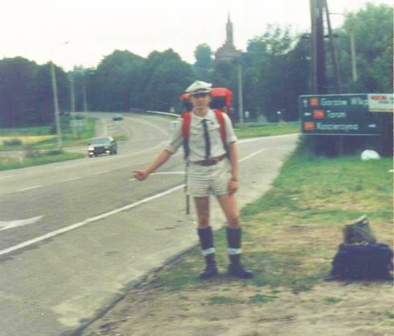
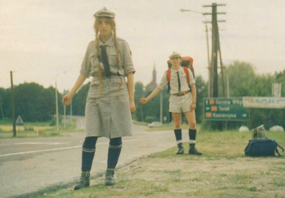
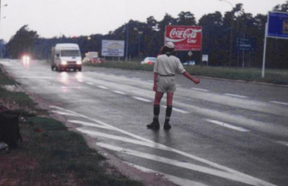
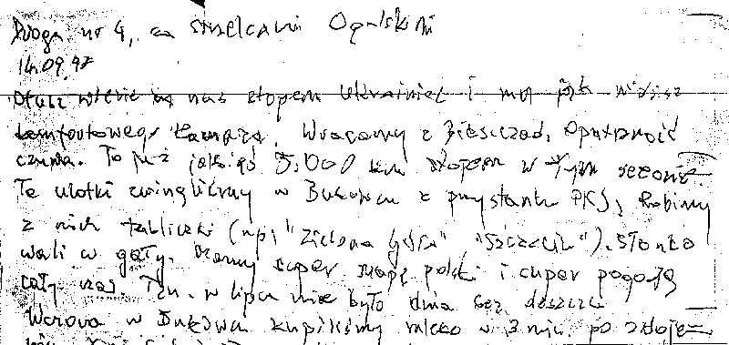
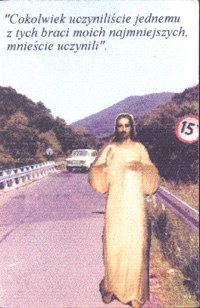
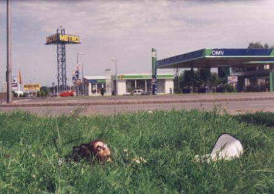
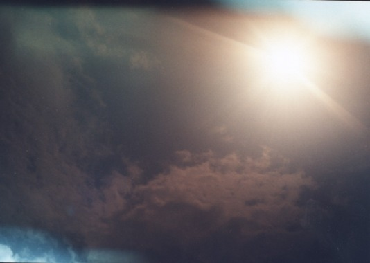
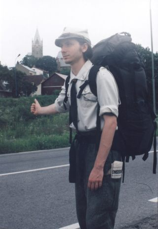
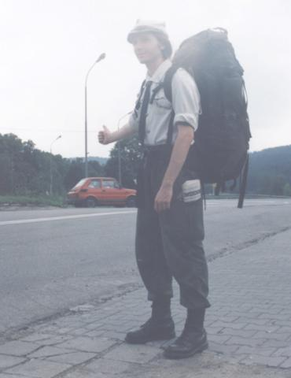

pacyfka
Autostop
Wielka to rzecz być znowu W DRODZE
Nansen
Nasza
autostopowa historia z Dziunym
zaczęła się pod wieżą Bismarcka. Na której zaczęło się nasze
wspólne życie.
To znaczy - oglądaliśmy tam zaćmienie Xiężyca i od tej chwili Dziuny
jest
ze mną, a ja z nim. Wracaliśmy około czwartej rano, nie jeździły żadne
autobusy. W środku nocy, w tej zakazanej dzielnicy, złapaliśmy jedyny
jadący
tamtędy samochód, który zawiózł nas w
stronę stoczni a potem w kierunku
centrum.

1.1 Nasz pierwszy raz
A więc
wybraliśmy się wreszcie na poważną
trasę. Po skubaniu odcinków po sto i dwieście - coś
dłuższego w końcu.
Z Borów Tucholskich w Bieszczady. Mój parę
miesięcy temu upieczony pierwszy
i jak się potem okazało jedyny narzeczony przywdział na siebie
harcerski
mundurek. W końcu stanica w Bukowcu miała być naszym pierwszym
przystankiem
bieszczadzkim.
Efekt był
porażający. Kierowcy
po prostu zatrzymywali się i nas zabierali. Niesamowite to było.
Niestety,
wysadzali nas w nieodpowiednich miejscach. Jeden pożegnał się z nami na
obrzeżach Torunia, a my (z dwoma pełnymi plecakami) przedreptaliśmy
miasto
na wskroś, łącznie z chyba kilometrowym mostem na Wiśle. Inny kierowca
wysadził nas w Zgierzu. Przejazd tramwajami przez Łódź do
pętli na jej
drugim końcu zajął ponad godzinę, a dreptanie wylotówką w
poszukiwaniu
miejsca, gdzie nie będzie już znaków z zakazem zatrzymania,
dwudziestocentymetrowych
krawężników i gęsto rosnących drzew - następne dwie godziny.
Doszliśmy
w końcu pod Centrum Zdrowia Matki Polki. Łapiąc widzieliśmy, jak
wychodzą
stamtąd pary niosące koszyki ze świeżymi potomkami. Mrok gęstniał. W
końcu
ciemno się zrobiło całkiem. Trzeba było pomyśleć o jakiejś kimie. Nie
mieliśmy
namiotu - nigdy nie wozimy ze sobą rzeczy tak ciężkich i o ograniczonym
zakresie zastosowań. Ale była nowiutka pałatka - płaszcz wojskowy.
Przeszliśmy
na drugą stronę drogi i rozwiesiliśmy ją między rosnącymi tam
brzózkami.
Jedynie
deszcz nie zawiódł nas
tej nocy. Przyszedł. Kiedy obudziliśmy się rano, pałatka wybrzuszona
niczym
Matka Polka wisiała nad nami, dźwigając kilkanaście litrów
wody. Spodnia
jej strona była suchutka. Podczas swego pierwszego razu spisała się
wzorowo.
Był
niedzielny poranek. Wróciliśmy
więc na pętlę, bo tam widzieliśmy wieczorem kościół. I tu
stało się coś
niesamowitego. W czytaniu - słowa proroka Izajasza: ``Dlaczego
wydajecie
pieniądze na to, co nie jest chlebem? I waszą pracę - na to, co nie
nasyci?''
(rozdział 55, wers 2). Myśl, którą wcześniej obraliśmy za
motto naszych
wakacji. Zasada, że płaci się tylko za jedzenie, a nie za transport czy
miejsce do spania. Autostop i pałatka umożliwiły nam konsekwentne
stosowanie
tego postanowienia.
[Pewien znajomy mój poparł owo
stwierdzenie, uczyniwszy
jedynie małe zastrzeżenie: że warto wydawać pieniądze także na coś, co
jest piwem. Ale my jako harcerze nie musieliśmy się nad tym
zastanawiać.]
Po
otrzymanym od niebios znaku,
że słuszną drogę obraliśmy, wróciliśmy pod CZMP. Stamtąd
zabrał nas autokar,
który pusty wracał z Turcji. Największy, jakim jechaliśmy w
życiu. Oglądaliśmy
dachy ciężarówek od góry. Kierowca i jego żona
pilot częstowali nas herbatą
z expresu.
Tak więc
minął poranek i wieczór
- dzień drugi. Wbijaliśmy się w coraz większe odludzia. Na skrzyżowaniu
w Hoczwi dopadł nas mrok. Poczęło się chmurzyć i siąpić. I, co gorsza,
nie jechało tamtędy NIC. Po prostu NIC. Dwie bryki, które
nas minęły w
ciągu pół godziny, wypchane były po brzegi ludźmi. A byliśmy
o dwadzieścia
kilometrów od celu!
Kolejny
exkluzywny samochód wypełniony
rodzinką wczasowiczów przejechał obok nas i znikł. Po chwili
wraca, zakręca
w kałużach na podjeździe sklepu i trąbi na nas. W środku ojciec z
czwórką
dzieci. Upycham się z nimi na tylnym siedzeniu, Dziuny z przodu z
plecakami
na kolanach.
- Zrobiliśmy
głosowanie, czy wrócić
po was, czy nie - mówi kierowca. - Ja to nie zabieram
autostopowiczów.
Samotną kobietę to może bym zabrał. Dwóch już nie. Albo
faceta z brodą
i gitarą. Albo harcerza.
Jechali
tylko do Polańczyka, ale
nadłożyli drogi, żeby podwieźć nas aż do stanicy. A tam - pod ciemną
mokrością
drzew - jasny prostokąt drzwi. Ciepła sucha kuchnia. Herbata. Ryż.
Ludzie,
którzy nas nie wygonią dlatego, że mamy mało pieniędzy.
I nigdy nie
dowiemy się, czy w
tym rodzinnym parlamencie, którego debata odbyła się w
samochodzie, przeszliśmy
głosami lewicy, czy prawicy.

1.2
Powrót z gór
Zbieraliśmy
się już do powrotu z gór.
Po miesiącu łażenia po Bieszczadach wróciliśmy do Bukowca.
Na sam koniec
skoczyliśmy na PZHS do Wetliny. Szliśmy przez góry i do
Przełęczy Orłowicza
na znakowanym przecież szlaku nie spotkaliśmy ani jednego człowieka. Za
to nie schodząc ze ścieżki uzbieraliśmy dwie menażki
grzybów, plus kilka
kań.
Do Wetliny
przyszliśmy akurat kiedy
zaczynała się popołudniowa msza (a była to niedziela). Po mszy
wychodząc
spotkaliśmy znajomych ze Szczecina, którzy chodzili tu z
namiotem, zresztą
ode mnie pożyczonym. Oznajmili, że namiot spisuje się świetnie, tylko w
paru miejscach przegryzły go myszy, usiłujące dostać się do jedzenia.
Tego
roku w Bieszczadach była plaga gryzoni. Nieszczęsne, wygłodzone
stworzenia
potrafiły dobierać się do plecaków, nawet gdy spaliśmy z
głowami na nich.
Kanie usmażyliśmy u xiędza na plebanii, a
wyszedłszy
z kościoła nie zdążyliśmy nawet rozpocząć rozglądania się za miejscem
do
łapania: jakaś bryka na nasz widok (a raczej: na widok naszych
mundurów)
zatrzymuje się i pyta którędy do harcerzy. ``Możemy państwa
popilotować'',
odpowiadam sprytnie. PZHS okazał się jednak imprezą zbyt drogą i
masową,
więc wieczorem zaszyliśmy się w krzaczory po drugiej stronie szosy i
pod
pałatką dotrwaliśmy do rana. Na śniadanie upichciliśmy grzyby ze
wczoraj.
Jedynym dotępnym tam drewnem była wierzba. Pali się fatalnie. W końcu
na
drogę - startujemy do Szczecina. A tu strugi uczestników
imprezy sunące
w obu kierunkach. Przebija się przez nich biała Skoda... na
szczecińskich
numerach! No czok, gdyby ją ułapać... Machamy - zatrzymała się!!!
A w środku -
znajomi z naszego
rodzinnego miasta! Nie jadą niestety do domu, tylko do sklepu. Ale
podrzucili
nas duży kawałek w stronę Cisnej.
Ruch na tych
zapadłych obszarach
był tak słaby, że na wylotówce Sanockiej znaleźliśmy się
dopiero po południu.
Nie zdążyliśmy zdjąć plecaków i się ustawić, gdy na machanie
zatrzymał
się pusty autokar.
- Ale nie
mamy za bardzo pieniędzy...
- Wsiadajcie.
Był to
nowiusieńki Autosan, świeżo
z taśmy produkcyjnej. Siedzenia miał jeszcze zafoliowane.
- Gdzie
chcecie jechać?
- Do
Krakowa...
- To kawałek
pojedziemy razem.
Ja jadę dużo dalej. Odstawiam ten autobus na nową bazę,
która go zakupiła.
W Stargardzie Szczecińskim...
Aż nas
wgięło. Stargard?! 30 km
do domu?!
Ale z
drugiej strony - tak wsiąść
na jednym końcu Polski i wysiąść na drugim - to prawie tak jakby
pociągiem
jechać. Nie nacieszymy się w ogóle tym łapaniem. Więc -
dziękujemy kierowcy
pod Tarnowem i ustawiamy się w kierunku Krakowa - który
niezależnie od
wszystkiego zawsze warto odwiedzić.
[BTW -
kierowca zabierał ludzi
stojących na przystankach PKS, a oni zostawiali mu drobne pieniądze. Z
tego wnioskuję, że jest miejscowym zwyczajem, że nowe Autosany
zabierają
ludzi, którzy normalnie są klientami PKS, a dzięki temu
dojeżdżają szybciej.
Dobrze, że na początku umówiliśmy się, że jedziemy gratis.]
Na obwodnicy
tarnowskiej machamy,
zatrzymuje się osobowy samochód. Kierowca wysiada i pyta:
- Riebiata,
kuda wam nada?
-
Kraków - odpowiadamy, nieco zdetonowani.
- W Krakow?
Sadities!
Trochę
strachu, nie dlatego, że
Rosjanie - ale - może tam obowiązują jakieś inne zwyczaje? A nuż będą
chcieli
od nas kasy? No i dalekie echo wszelkich niusów o mafii itd.
Ale widzę,
że pasażer przedniego fotela zabiera z ``korytka'' między siedzeniami
saszetkę
i chowa ją do skrytki z przodu. Spoko - myślę sobie - skoro on się boi,
że go okradniemy, to tym bardziej nie okradnie nas...
No i tak
słuchając lecącego z kasety
disco-rusolo dojeżdżamy do Krakowa. Plecaki na grzbiet i oczywiście
walimy
na Stare Miasto. Wchodzimy we Floriańską - a tam z przeciwka Marta.
Moja
najlepsza przyjaciółka. Spacerujemy razem do
późna, potem ona idzie do
jakiegoś schroniska spać, a my - pod Sukiennice. Układamy się w
śpiworze
pod arkadami.
Obudziliśmy
się koło siódmej, gdy
podeszło do nas dwóch długowłosych chłopaków.
- Nie
chcielibyście kupić konopi?
- E nie. My
się czym innym jaramy.
Muzyką, chodzeniem po górach...
- Bo wiecie.
My byśmy nigdy ich
nie sprzedawali, my byśmy je sami sobie zużyli, ale już nie mamy na
chleb...
Nie mieliśmy
ochoty na konopie,
ale dysponowaliśmy drumlą i fletem, a oni - bębenkiem. Więc pograliśmy
troszkę razem, improwizując. I do dziś żałuję, że nie poczęstowałam ich
tymi pięciodniowymi piętkami chleba, ściągniętymi z kuchni w Bukowcu...
za późno mi to przyszło do głowy. Chłopaki - przebaczcie.
Na
wylotówce Krakowa staliśmy dość
długo, bo co chwila wpychali się przed nas jacyś miejscowi, najczęściej
zresztą młodzi i płci słabej. W końcu stanął duży Fiat. Kierowca jechał
do Norymbergi. Zaproponował, żebyśmy mu towarzyszyli, ale nie mieliśmy
paszportów. To on nam powiedział, jak można objechać Wrocław
przez Kąty.
Tam też nas wysadził. Podjechaliśmy kawałek ... dźwigiem, potem szukamy
miejsca do łapania. Chmurzy się i błyska.
W chwili gdy
spadają pierwsze krople
deszczu zatrzymuje się obok nas exkluzywny Mercedes. - Macie szczęście
- mówi kierowca - zazwyczaj nie biorę, ale tak myślę o tym
wszystkim i
muszę to komuś w końcu powiedzieć... Jaką lubicie muzykę? Ja tu mam
Gary
Moore'a, Tinę Turner, Skaczącego Stefana, ale jest też kaseta moich
dzieci...
- Patrzę, coś w rodzaju erotic disco hits. Pierwszy raz widzę kierowcę,
któryby pytał się stopczaków, czego chcą
posłuchać.
No i
opowiada nam kierowca. O swoim
życiu. O studiach, pracy, firmie, rodzinie. Nie mogę przytoczyć tu tej
opowieści.
- Jak jechałem w tamtą stronę, to
widziałem
tu brzoskwinie przy drodze. Teraz stanę i kupię.
Sprzedawca
nie ma już brzoskwiń,
ale oferuje kiść winogron. -Chcecie winogrona? - pyta nas pan Andrzej.
Zdezorientowani, nie wiemy, co powiedzieć. - Lubicie? Dawaj pan. -
mówi
do sprzedawcy i płaci pięć złotych: tyle co dzienne nasze utrzymanie
tam
w górach. Na dwie głowy. No i: kupowanie owoców
za pieniądze, podczas gdy
w Hoczwi po drodze zebraliśmy całą reklamówkę cudownych
jabłek z jabłoni,
która koło skrzyżowania przechylała się nad płotem do rowu.
Jedziemy i
konwersujemy dalej, skubiemy nieśmiało te winogrona. - To ma być
wszystko
zjedzone, wcinajcie - mówi nasz kierowca. - Może wy głodni
jesteście? -
Gdybyśmy zaprzeczyli to byśmy skłamali, więc ... biorąc milczenie za
zgodę,
pan Andrzej zaprasza nas do przydrożnej jadłodajni. Wybieramy to, co
wegetariańskie
i niedrogie, więc frytki i surówki. Konsumujemy przy
stoliku, nad nami
telewizor, ktoś zmienia kanał. Nasz dobroczyńca na to: - Dobrze, że
przełączyli,
bo jak widzę Shazzę, to dostaję... Shazzy.
Dojeżdżamy
do Zielonej. - Wiecie,
ja tylko na chwilę, dosłownie na pięć minut wejdę do domu, odbiorę
korespondencję,
powiem, że jadę na zakład, a potem obwiozę was po Zielonej
Górze i odwiozę
na stopa. Dosłowinie pięć minut. - Czekamy w samochodzie. To wszystko
jest
jakieś niesamowite. Jeszcze extra na wylot pojedziemy.
Do zmroku
dojechaliśmy do Świebodzina
- młody chłopak nas wiozący też nas podrzucił za miasto: - Dla mnie to
są cztery minuty, a wy byście szli pół godziny. I to jeszcze
z plecakami.
Na skrzyżowaniu z drogą Berlin-Poznań
zastanawiamy
się, co zrobić z nocą. No i co za niefart - tylko 180 km od domu!
A tu
zatrzymuje się autokar, elektrycznie
otwierają się drzwi: - tylko do Gorzowa.
-A za
pieniądze, czy bez?
-Nie ma nic
w przyrodzie za darmo
- kierowca na to i rusza, nie zamknąwszy nawet tych swoich rozsuwanych
drzwi. Ugryź się.
A po chwili
- cud! W kompletnej
ciemności staje TIR ogromny, ``MAN''. Wiezie margarynę do hurtowni w
Szczecinie.
Pogrzewa ostro, osobowe samochody wyprzedza. Kabina jak w odrzutowcu.
Około
północy jesteśmy u Dziunego w domu.
Kraków-Szczecin w jeden dzień się nam
udał. Wtedy uważaliśmy to jeszcze za niebotyczne osiągnięcie.

Łapanie
o zmierzchu na wyjeździe z Zielonej Góry. Sierpień 1996.
1.3 Słucham głośno muzyki
Jechaliśmy z
Koszalina do Gdańska.
Zatrzymuje się mercedes. Prowadzący go mężczyzna - na oko 60 lat -
odpowiada
na powitanie:
-Podwiozę
was do Lęborka, ale jest
jeden warunek. Słucham głośno muzyki.
-I my
chętnie posłuchamy - mówię,
myśląc, że wprawdzie disco-polo to katusze dla duszy, ale ``lepiej źle
jechać niż dobrze stać''.
Ładujemy się
do środka, zapinamy
pasy. Kierowca odkręca volume na full, a z głośników wali...
Pink Floyd.
The Wall, jedna z płyt mojej młodości.
A pan tylko
wrzuca kolejne biegi...
Wskazówka prędkościomierza mu ze 140 nie schodzi...
1.4
Powódź
Nie
widzieliśmy powodzi w telewizji.
Nie tylko dlatego, że nie oglądamy telewizji. Głównie
dlatego, że włócząc
się po górach byliśmy kompletnie unplugged.
Skończyliśmy
łazić po Beskidzie
Niskim i wybieraliśmy się w Góry Stołowe. Do wieczora
dojechaliśmy do Gliwic.
Już prawie po ciemku zabrał nas stamtąd pusty autokar, który
wracał zawiózłszy
powodziowe dzieci na Mazury. Jechaliśmy przez Kędzierzyn-Koźle. Woda
zeszła
dość niedawno stamtąd, ale główna droga była już przejezdna.
Po jej obu
stronach leżały hałdy połamanych mebli, jakichś lodówek,
gałęzi, wyrwanych
płyt chodnikowych. Asfalt był gdzieniegdzie pozwijany, jakby to była
szmata.
W domach, w oknach, świeczki. Wszystko to oświetlone jedynie przez
reflektory
autokaru. Upiorne wrażenie. W radiu cały czas komunikaty powodziowe i
relacje
z akcji ratowniczej.
Następnego
dnia jechaliśmy przez
Nysę i Kłodzko. Ślady wody na domach, do drugiego piętra. Worki z
piaskiem
w drzwiach domów i sklepów. Jakiś czas potem
wiózł nas powodzianin z Nowej
Soli, któremu z dorobku całego życia został jedynie
samochód, bo akurat
był gdzie indziej.
A noc
spędziliśmy w Prudniku, na
dworcu. Przyjechały pały i nas spisały, życzyły dobrej nocy i
odjechały.
Rano po mszy (niedziela) zaglądamy do zakrystii mówiąc że my
w drodze i
dworzec i zimno i czy może herbatę? Dominikanie - bo to oni byli -
poczęstowali
nas śniadankiem. Nigdy w życiu twarożek ze szczypiorem tak mi nie
smakował.
A potem się
okazało, że Dziuny
w Prudniku ma krewnych i wcale nie musieliśmy spać na dworcu. Ale gdyby
nie to, to nie dalibyśmy Dominikanom okazji do zrobienia dobrego
uczynku,
i nie miałabym okazji przeżyć spisania przez funkcjonariuszy (jedyny
raz
w życiu, jak na razie). A podobno wszystkiego trzeba
spróbować...
1.5
Ciocia Julia
Przed
wyjazdem na spływ siedziałam
sama w domu, podczas gdy rodziciele byli na urlopie. Do mamy przyszedł
list, więc postawiłam go na półce. Stał tam z tydzień, a że
podlewałam
codziennie stojące obok kwiaty, adres nadawcy wbił mi się w pamięć:
Maradki
5, poczta Sorkwity.
No i
jedziemy na spływ. Cała ekipa
pociągiem, a my z Dziunym stopem. Wyjechaliśmy z dwudniowym
wyprzedzeniem,
na wszelki wypadek. Jechało się szybko i około 17 byliśmy już za
Olsztynem.
A mapę mieliśmy dość śmieszną: ``Campingi w Polsce''. Przyglądając się
drodze co przed nami, zauważyłam zaznaczony tam camping - Sorkwity. I
olśniło
mnie. List z Maradek był od cioci mojego ojca, do której moi
rodzice jeździli
na wakacje jeszcze w narzeczeństwie, i z którą od wtedy mama
koresponduje.
No i myślę sobie: a czemużby się tam nie zwalić? Poznalibyśmy daleką
rodzinę,
no i obskoczylibyśmy metę...
Tak też się
stało. Pukamy do domu
nr 5. Otwiera starszy siwy człowiek.
-Dzień
dobry. Szukamy pani Julii.
-Stara! -
woła gość. - Do ciebie!
Wchodzimy do
środka i mówię, skundśmy
som. Radość była obustronna. Ciocia mająca ponad 80 lat okazała się
osobą
w pełni sprawną, rozmowną i o szerokich horyzontach. Mówiła
m.in.: ``Ludzie
farbują sobie włosy. Na niebiesko, zielono, różowo. To
dobrze. Dzięki temu
ci, co te farby robią, mają z czego żyć.''
Przy kolacji
zdałam raport z ostatniego
ćwierćwiecza dziejów szeroko rozgałęzionej rodziny w
Szczecinie. Piliśmy
wiejskie mleko, a ona dolewała nam do szklanek mimo
protestów. W ten sposób
na kolację i śniadnie wypiliśmy łącznie cztery litry.
A rano
pojechaliśmy dalej. W następnym
roku ciocia Julia odeszła do Boga.
1.6
Kiedy noc nas zaskoczyła...
Szczecin, w
którym mieszkamy, jest
daleko ode wsząd - a najdalej od Bieszczad i innych gór
naszych ukochanych.
Z tego powodu na trasach, które przemierzaliśmy, czasem noc
nas zastawała.
Jednego
razu, jadąc w Bieszczady,
dotarliśmy do zmroku tylko do Krakowa. Objechaliśmy go obwodnicą,
wjechaliśmy
Zakopianką do skrzyżowania z drogą na Tarnów i na przystanku
komunikacji
miejskiej łapiemy licząc na zmiłowanie Boże, żebyśmy nie musieli
zostawać
na noc w mieście, bo ze wszystkich żywiołów, dzikich
zwierząt i epidemii
czyhających na podróżnych najgroźniejsi są ludzie. Zwłaszcza
ci żyjący
w dużych skupiskach. A już szczególnie kibice krakowscy w
konfrontacji
z ludźmi pochodzącymi z miasta, które reprezentuje niejaka
Pogoń.
Stamtąd
zabiera nas lśniąco srebrny,
terenowy Mitsubishi (nie jestem pewna, marki rozpoznaję po logach, a
one
czasem mi się mylą), w którego tablicy rozdzielczej
zauważyłam między innymi
żyrokompas. Pan kierowca pyta, dokąd my. My, że w Bieszczady, a
chwilowo
do jakiejś stacji benzynowej za miastem, na ktorej moglibyśmy rozstawić
pałatkę i przekimać do rana. No i różne rozmowy, jak to na
autostopie,
zgadaliśmy się co do pewnych wspólnych zapatrywań na świat i
najnowszą
historię Polski, miło się konwersuje, no i dowiadujemy się, że nasz
dobroczyńca
mieszka we wsi kilkadziesiąt km na południe od drogi nr 4
którą podążaliśmy,
i jeśli bylibyśmy skłonni oddalić się od niej na tę noc, to możemy ją
spędzić
u niego.
-Możecie
spać u mnie w domu, w
ogrodzie, albo w stajni na sianie, jak wolicie...
Usłyszawszy
``stajnia'' zawyłam
z zachwytu. Ja, stara koniara, dziecko z miasta, którego
dostęp do koni
był zawsze mocno reglamentowany niezamożnością rodziców,
pracowników sfery
budżetowej.
Dom naszego gospodarza
okazał się być dość niezwykły. Na ścianach widniały malunki
przedstawiające
konie, a także duży portret pani domu. Poczęstowani zostaliśmy kolacją,
wykąpaliśmy się i poszliśmy spać do koników.
Klacz,
która jakiś czas temu została
kupiona, okazała się być źrebną. Żona naszego kierowcy planowała za
parę
dni wybrać się do stadniny w miejscowości Rabe (Bieszczady) po
świadectwo
ojcostwa dla źrebaka. Z naszego powodu plany te zostały przesunięte na
następny poranek i z gościnnego domu pojechaliśmy bezpośrednio do
Bukowca.
Przejechawszy 287 km zostaliśmy odstawieni przed bramę obozu.
--
Innym razem
wracaliśmy z Bieszczad
do domu. Kierowca, który wziął nas w Sanoku, jechał do
Rzeszowa, więc zabraliśmy
się z nim, żeby dostać się na drogę nr 4. W Rzeszowie wziął nas
Ukrainiec,
jadący TIRem marki Kamaz. Jechał aż do Opola. Było to szczęście w
nieszczęściu.
Przejechaliśmy przez Kraków i Śląsk, ale latająca maszyna
wlokła się tak
niemiłosiernie, że zajęło to właściwie cały dzień, już nie bardzo
długi,
bo była połowa września. Do tego kierowca co jakiś czas spotykał
pobratymców,
z którymi zatrzymywał się na różnych parkingach,
ściskał się i konwersował.
Poza tym komfort jazdy w kabinie Kamaza możnaby porównać
jedynie do wygody
pomykania wozem na nieogumionych kołach po uliczce wybrukowanej kocimi
łbami. Już po godzinie takiej jazdy czułam, że z mojego
mózgu zrobiła się
bita śmietana wyłażąca mi uszami, a czacha spełniała rolę milkszejkera.
Wysiedliśmy z tego madejowego wozu na wjeździe do Opola i zaczęliśmy
łapać,
licząc, że nas ktoś przewiezie przez miasto. Mieliśmy zresztą napisy z
kierunkiem.
Zatrzymuje
się jakaś pani i tłumaczy:
``Tu wam się nikt nie zatrzyma, ja jadę tylko do centrum, ale
wsiadajcie,
zawiozę was na takie skrzyżowanie, z którego można łapać''.
Tak też się
stało. Na tym skrzyżowaniu inna pani staje i mówi: ``Tu wam
się nikt nie
zatrzyma, ja jadę tylko kawałek, ale wsiadajcie, zawiozę was na koniec
miasta, gdzie już można łapać.'' I tak się stało. Tam zatrzymuje się
pan
i mówi: ``Tu wam się nikt nie zatrzyma, ja jadę na
peryferie, ale wsiadajcie,
zawiozę was za miasto, gdzie lepiej będzie łapać.'' I tak się stało.
Byłam pod
wrażeniem uczynności
mieszkańców Opola.
Następny
kierowca dowiózł nas do
Kątów Wrocławskich. Jest ciemna noc. Stoimy w środku miasta
i łapiemy,
bo co mamy lepszego do roboty. A tu nadjeżdża Policja. Trochę
spękaliśmy,
ale nie za bardzo. Byliśmy w mundurach, a służby mundurowe lubią się
nawzajem.
Ale zawsze strach lekki.
-Dobry
wieczór - mówią Błękitne
Anioły. Patrzą na kartkę z napisem ``Szczecin''. - Do domu czy z domu?
-Do domu.
-A skąd
jedziecie?
-Z Bieszczad.
-O rany. Tu
nie stójcie, bo tu
się wam nikt nie zatrzyma. Idźcie z 500m dalej, tam jest stacja paliw,
jak ktoś zatrzyma się po benzynę to może i was zabierze.
Tak też
zrobiliśmy. Kiedy dochodziliśmy
do stacji, policjanci właśnie z niej wyjeżdżali. Staliśmy jeszcze jakiś
czas, ale ruch zamarł kompletnie, nieliczne bryki na lokalnych
numerach.
W sumie byliśmy na objeździe, a nie na drodze krajowej. Trzaby się
przekimać
zatem. Wchodzimy na stację i idziemy do pracowników.
-Dobry
wieczór. Mamy problem: jedziemy
autostopem...
-Tak, wiemy,
z Bieszczad do Szczecina
- uśmiechają się do nas. Widocznie policjanci już nas zarekomendowali.
-Czy jest tu
gdzieś jakiś daszek,
pod którym moglibyśmy położyć się spać? Tylko tyle, żeby nie
padało.
-Na dworze?
- zdziwienie. Wrzesień
ten nie należał do najcieplejszych.
-Mamy
termoodporne śpiwory...
Pan
pracownik otworzył nam wiatę,
w której składowano jakieś deski i płyty pilśniowe, i
pomógł nam poukładać
je, żebyśmy nie musieli spać na betonie. Dostaliśmy też herbatę,
wrzątek
do zupki-zalewajki i propozycję skorzystania z prysznica. Ale
stwierdziliśmy,
że dowieziemy brud do domu.
Pracownicy
stacji paliw w Kątach
Wrocławskich przekonali mnie po raz kolejny, że istnieje jeszcze w
ludziach
dobro.
A następnego
dnia w południe byliśmy
już w Szczecinie.

Oto list, który pisałam jadąc,
na odwrotnej stronie
ulotki kandydata (nie powiem z której partii). Z uwagi na
charakter pisma,
zwłaszcza w Kamazie, umieszczam poniżej transkrypcję:
Droga nr 4, za Strzelcami Opolskimi
14.09.97
Otusz wiezie nas stopem Ukrainiec i ma jak
widzisz
komfortowego Kamaza. Wracamy z Bieszczad. Opatrzność czuwa. To już
jakieś
5.000 km stopem w tym sezonie. Te ulotki zwinęliśmy w Bukowcu na
przystanku
PKS, Robimy z nich tabliczki (np. ``Zielona Góra'',
``Szczecin''). Słonko
wali w gały. Mamy super mapę polski i super pogodę cały czas. Tzn. w
lipcu
nie było dnia bez deszczu
Wczora w
Bukowcu kupiliśmy mleko
w 3 min. po zdojeniu. Xiężyc świecił, z pobliskiej imprezowni
dolatywało
Stare Dobre Małżeństwo na zmianę z The Prodigy, siedliśmy przy szosie i
obaliliśmy za jednym posiedzeniem 1,5 litra (!). A dzień wcześniej na
Połoninie
Wetlińskiej tak wiało, że spychało ze szlaku na krok lub dwa i trzeba
było
iść pochylonym na _n_a_w_i_e_t_r_z_n_ą.
O teraz
stoimy (skoczyłam siku)
I znów jedziemy. Był parking i panie lekkich
obyczajów rozmawiające przez
telefon komórkowy. Ach! Pizza! Kalafior! Ziemniaki! Słońce
zachodzi, Opole
się zbliża.
15.09.97, g.11.01
Droga nr 3, przed Gorzowem
Teraz jedziemy BMW. Gość gnie, strzałka mu
ze 140 nie
schodzi. Rozmawia ze swą panią o tym, gdzie by się wybrać: Bahama?
Amsterdam?
300 marek za tydzień - to grosze! (my nasz lipiec obgoniliśmy za 40 (!)
zł na dwie głowy). Dojechaliśmy wczoraj za Wrocław, do
Kątów, na obwodnicę,
i poszliśmy spać na CPN. (...) Zostawiliśmy im obrazek z Panem Jezusem
Autostopowym i cytatem z Hugo o gościnności. [``W społeczeństwach
prymitywnych
gościnność jest cnotą, w cywilizowanych - towarem handlowym'' -
przyp.aut.].
No i od ósmej rano (szroniło kosmicznie) - gość do Nowej
Soli, potem harcerz
z mamą do Zielonej (na obwodnicę) i teraz to BMW, do samego Szczecina.
Jak nie wbijemy się gdzieś w jakiś korek to w pięć godzin obgonimy
trasę
Wrocław-Szczecin.
Policzyłam,
że chleb który jedliśmy
dziś resztki na śniadanie, ma 7 dni. Wczoraj resztki razowca ze
Słowacji
(fantastyczny, żytni) - 12 dni. Człowiek, który nie wie, co
to znaczy wyobrażać
sobie najrozkoszniejszą delicję świata w formie świeżej grahamki, nigdy
nie jadł naprawdę.
(...) Ale
mnie szyja boli od tego
Kamaza. Kierowcy jadący z przeciwka ostrzegli nas światłami, że pały
stoją.
Gość zwolnił o połowę i uniknęliśmy problemu.

Pan Jezus Autostopowy: własnym
sumptem wyprodukowany obrazek dla
życzliwych kierowców
--
Była jeszcze
jedna historia, kiedy
z Gdańska jechaliśmy do Pilzna przez Sochaczew, bo tam akurat wybierał
się kierowca TIRa który jako pierwszy ulitował się nad nami
po czterech
godzinach stania w Toruniu. Na wylocie Sochaczewa znaleźliśmy się już w
kompletnych ciemnościach. Ruch był zerowy. Idziemy szosą szukając
krzaków
na nocleg, kiedy usłyszeliśmy, że coś jedzie. TIR. Machamy na niego -
tak
dla zasady, bez nadziei. A on nas zabiera. Jechał do Rzeszowa. Jakieś
60
km przed tym miastem kierowca zatrzymał się na spanie. On spał na
dolnym
koju, a my z Dziunym na górnym.
1.7
Kiedy noc nas nie zaskakiwała...
Jechaliśmy w
Pieniny, na obóz. Stoimy
na wylotówce Szczecina z napisami: Zielona Góra,
Wrocław. Rejestracje głównie
lokalne, samochodów ciężarowych mało. Ktoś podrzuca nas do
Pyrzyc - 30
km, z siedmiuset pięćdziesięciu, które przed nami. Ale
``nawet tysiącmilowa
podróż zaczyna się od pierwszego kroku''. Tam, szukając
miejsca do łapania,
machamy na przejeżdżające samochody. Naraz widzę TIR-a na krakowskich
numerach!
Rozpaczliwie podnoszę kartkę przygotowaną na później:
``Kraków''. I TIR
zatrzymuje się!
Kierowca-góral zawiózł nas nie
tylko do Krakowa, ale dalej, do Myślenic. Mówił, że planował
spać po drodze,
ale jak ma nas, to jest motywacja, żeby dojechać do domu jeszcze tego
dnia.
Kiedy się już nieźle rozgadaliśmy, chwilami niechcący przechodził z
języka
ogólnego na gwarę. To był najdłuższy odcinek, jaki
przejechaliśmy z jednym
kierowcą.
W
Myślenicach byliśmy pod wieczór.
Z Zakopianki zabrał nas gość, który jechał do Niedzicy.
Opowiadamy, że
jedziemy na obóz za Jaworkami, 12 km za Szczawnicą. Okazuje
się, że nasz
kierowca 30 lat temu, w wieku 11 lat, był na swoim drugim obozie
harcerskim
prawie w tym samym miejscu. Więc zawiózł nas pod samą bramę,
nadłożywszy
chyba z 40 km. Kiedy przejeżdżaliśmy przez Szczawnicę, przez drogę
machając
na oślep, przbiegł łysy gość w czerwonym polarze. ``To Lechu! Nasz
kumpel!''
- wołamy. ``A, jak wasz kumpel, to i jego zabierzemy'' -
mówi kierowca.
Jego gest był tym bardziej miły, że w nocy za Szczawnicą ruchu nie ma w
ogóle, i tak musielibyśmy - Lechu i my - walić z kapcia. A
do samego obozu
prowadzi 4 km drogi leśnej, na której stopa można ułapać raz
na 45 lat.
1.8
Całkowite zaćmienie (nie tylko o autostopie)
Niefart
ścigał nas od samego początku.
Budzik ustawiony na czwartą nie zadzwonił. Obudziłam się o
siódmej. Zebraliśmy
się szybko, ale nie znając najlepiej linii komunikacyjnych w Krakowie
wsiedliśmy
w nieopowiedni autobus, który wywiózł nas
nie-wiem-gdzie. Udało nam się
wrócić do pętli, ale nie ryzykowaliśmy już prób
dojazdu na Zakopiankę,
zresztą bilety czasowe się skończyły, tylko poszliśmy na nią pieszo.
Czyjąś
genialną decyzją wyjazd z Krakowa był w szczycie sezonu urlopowego
remontowany.
Rozkopane pobocza, zerwane chodniki, barierki, pachołki - ciągnęły się
parę kilometrów. Trasy dla pieszych tam nie uwzględniono,
więc ryzykowaliśmy
życie ganiając między betoniarkami i betonowymi płotkami. Kiedy
dostaliśmy
się za remont, była już dziesiąta. Żar lał się z nieba piekielny,
pomnażała
go rozpalona czerń szosy, a szans na cień nie było. Staliśmy tam chyba
godzinę, po czym jeden gość podwiózł nas do Rabki. I tam się
dopiero zaczęło.
Ustawiliśmy
się na drodze do przejścia
granicznego Chyżne/Trstena, wymachując samochodom wielką płachtą z
napisem
``Budapest - eclipse''. Rzecz w tym, że samochody te przejeżdżały z
częstotliwością
średnio czterech na godzinę. Staraliśmy się trzymać w cieniu drzewa,
ale
to niewiele pomagało. Słońce postanowiło chyba nas zabić, usmażyć na
patelni
szosy, ugotować w mundurkach (dosłownie). To był KOSZMAR. I tak źle
znoszę
wysokie temperatury, ale to transcendowało delimitacje mojej
tolerancji.
Dziuny czuł się podobnie. Świadomość rozwijającego się niefartu
pogłębiał
fakt, że zaledwie dwa dni wcześniej w tym samym miejscu złapaliśmy
dwóch
młodzieńców jadących do Budapesztu, bardzo zdziwionych, że
chcemy wysiąść
w Jabłonce. Proponowali zawiezienie do stolicy Węgier, ale my nie
mieliśmy
nawet przy sobie paszportów, bo tego dnia planowaliśmy
jedynie Babią Górę.
Wreszcie
jeden Polak jadący nad
zalew przewiózł nas przez granicę. Ale to był dopiero
początek.
Spietrani
byliśmy nieco, jak to
będzie z tym stopem za granicą, bo to była właściwie pierwsza dłuższa
trasa
nasza poza krajem ojczystym. Ale Słowację (raptem 250km) przejechaliśmy
w kilka godzin dwoma ``kamionami'' (ciężarówkami).
Wysiedliśmy w miejscowości
Šahy, na granicy węgierskiej, którą przeszliśmy
pieszo (celnicy reagowali
bardzo sympatycznie na nasze mundury i drumlę wpiętą w moją kieszeń
bluzy)
a zaraz za przejściem zgarnął nas młody człowiek mówiący
najpiękniejszą
angielszczyzną, jaką kiedykolwiek słyszałam: bez tego nadętego britisz
nejtiwspikerskiego akcentu. Okazało się że jest Węgrem i jedzie do
Budapesztu,
odległego zaledwie 70 km od granicy. Nasz kierowca był tak miły, że po
podaniu mu adresu klasztoru Dominikanów, gdzie liczyliśmy na
metę, zawiózł
nas pod samą bramę.
I tu nasze
szczęście się skończyło.
A właściwie - nasz niefart powrócił.
Wikariuszem
generalnym Dominikanów
na Węgrzech jest Ojciec Józef - niegdyś nasz duszpasterz w
Szczecinie.
Najmądrzejszy człowiek na świecie. Mówię to z pełną
odpowiedzialnością.
Sześćdziesięcioletni ten duchowny łączy w sobie erudycję doktora
historii
(którym jest) i klasę obywatela Europy z przekorą i
świeżością umysłu nastolatka.
No i ten cudowny człowiek, kochany przez nas extatycznie, okazał się
być
nieobecnym. Co było do przewidzenia, bo jest bardzo zajęty na tej
swojej
odpowiedzialnej funkcji. W biurze parafialnym proboszcz
mówiący po niemiecku
powiedział nam że Ojciec Józef będzie w czwartek na mszy o 8
rano w kościele,
a poza tym to nie wiadomo. Rzecz w tym że był poniedziałkowy
wieczór. No
to nic, siadamy na murku i czekamy.
No i tak
wyglądała nasza budapesztańska
przygoda. W dzień temperatura w cieniu wynosiła 40 stopni, w nocy - 30.
Całe dnie spędzaliśmy siedząc pod klasztorem albo próbując
zwiedzać, z
tym że z pełnowymiarowymi plecakami, w ktorych nosimy wszystko co
potrzebne,
żeby przeżyć dwa miesiące poza domem, w tym koszmarnym upale nie było
to
zbyt komfortowe. Oddać bagaż do przechowalni baliśmy się. Nie wiadomo
zresztą
czy przebilibyśmy się przez barierę językową, szczególnie
przy odbiorze.
Na Węgrzech po angielsku mówią w zasadzie tylko młodzi
ludzie. Najczęściej
zatem kończyło się na siedzeniu w parku, gdzie było trochę chłodu
(czytaj:
odrobinę lżejszy żar) i fontanny, w których można było się
umyć, i krzaczory,
gdzie od biedy dawaliśmy radę się odlać. Z gorąca nie chciało nam się
jeść,
chwała Bogu, a owoce i soki są na Węgrzech nieprzyzwoicie wręcz tanie.
Na noc trafialiśmy na dworzec. Jeśliby kiedykolwiek zdarzy się Wam spać
w Budapeszcie na dworcu, to broń Boże na Keleti (tym do
którego dojeżdżają
międzynarodowe pociągi, kilka z Polski). Urzęduje tam bowiem mafia,
tacy
śniadzi panowie z poobcinanymi palcami. Pieniędzy też tam nie
wymieniajcie,
w szczególności u cinkciarzy.
Za to
Dworzec Zachodni (Nyugoti
Palayudvar) jest całkiem sympatyczny. Ludność zalegająca ławki to w
połowie
kloszardzi, a w połowie tacy jak my wędrowcy z plecakami,
których nie stać
na najtańsze w mieście schronisko młodzieżowe po dziesięć dolcy za noc.
W środę
miało być zaćmienie Słońca,
na które czekałam od 10 lat. Węgry przygotowywały się na nie
jak na święto
narodowe i wydawało mi się że wiem dlaczego: bo chociaż na dwie minuty
zrobi się chłodniej. Aby doświadczyć tego chłodu do Budapesztu zjechało
się międzynarodowe towarzystwo: Włosi, Amerykanie, Brytyjczycy, Polacy.
Podchodzi do mnie dziewczyna i pyta:
-Excuse me,
where can I buy tickets
for metro?
Ja jej na
to: - Bilety na metro,
tak?
Ona: -
Tak...:)
Ja: - Nie
mam zielonego pojęcia.
Żeby
zobaczyć zaćmienie jako całkowite,
musieliśmy odjechać na południe od Budapesztu, do pasa totalicji. Na
Balatonem
pewnie będą tłumy, więc postanowiliśmy udać się w drugą stronę, pod
granicę
rumuńską. Wybraliśmy się do Szeged, 170km od stolicy. Kiedy słońce
wstawało,
niebo było czyste. Tuptaliśmy szosą budapesztańską w stronę jeziora,
nad
którym chcieliśmy oglądać to kosmiczne wydarzenie. Żeby był
romantyczny
kontext krajobrazowy. Zresztą perspektywa porządnej kąpieli po czterech
dniach czterdziestostopniowego upału i nie zmieniania ubrań była nad
wyraz
kusząca. A tu naraz niebo się zaciąga, pełne zachmurzenie, front
atmosferyczny,
burza z piorunami i gradem, wichura. Dopadliśmy jakiegoś przystanku
węgierskiego
PKS-u, który prawie nie miał bocznych ścianek, a i daszek
niezbyt szczelny.
Do tego woda podpłynęła po ziemi i zmoczyła nam dół
plecaków i znajdujące
się w nich zapasowe ciuchy. Przemoknięci do nitki, trzęsący się z
zimna,
z wkurzeniem wpatrujący się w kurtynę chmur, siedzieliśmy w budce klnąc
los. Przejechaliśmy taki kawał świata, setki kilometrów,
dwie granice,
a tu ani Józefa, ani Budapesztu, ani zaćmienia. Z upału
wpadliśmy pod rynnę
lodowatej wody. Nie wiedzieliśmy co dalej robić. Postanowiliśmy
poczekać
na tę niespełna dwuipółminutową ściemę, która
pomimo chmur powinna objawić
się zniżką światła, a potem wracać.
Więc czekamy
na Godota, łapiąc
się nadziejek - smug mniej szarej szarości na szaroburym niebie.
Romantyczny
krajobrazowy kontext przedstawiał się następująco: rozpadająca się buda
węgierskiego PKS-u, po jednej stronie szosy stacja benzynowa, po
drugiej
myjnia dla Tirów. Kiedy przestało padać, położyliśmy się na
trawie na karimatach
i zaczęły po nas łazić ślimaki.

Romantyczne miejsce w
którym czekaliśmy na zaćmienie (Dziuny w trawie).
11.08.99
Po jakimś
czasie niebo przetarło
się na tyle, że zobaczyliśmy nadgryzioną tarczę słoneczną za firanką
chmur.
Od tej pory słonko znikało i pojawiało się co jakiś czas. W końcu
został
tylko cieniuśki jak igiełka skrawek. ``No zaćmiewaj się już, cholera!''
- wrzeszczeliśmy, kiedy akurat warstwa chmur przesłaniajacych Słońce
była
cienka. ``Nie zaćmiewaj się, kurde, poczekaj!'' - namawialiśmy, kiedy
widoczność
słabła. Nie posłuchało. Nagle zrobiło się ciemno, złoty skrawek
zniknął,
a pojawił się czarny krąg, otoczony koroną srebrzystych promieni,
oczywiście
półwidoczny zza chmur. Trwało to - wedle rozpiski dla tego
obszaru - dwie
minuty i dwadzieścia dwie sekundy. Pięknie było. Zaślubiny Xiężyca ze
Słońcem
dokonały się.
I
równie nieoczekiwanie jak ciemność
przyszło światło: skrawek Słońca explodował zza brzegu czarnego Xiężyca.

Słońce chwilę po odćmieniu -
widziane przez filtr z kliszy fotograficznej.
11.08.99
Powrót do Budapesztu był nad wyraz
liryczny: ludzie, którzy nas zabrali, słuchali cały czas w
samochodzie
Leonarda Cohena. Bardzo się cieszyłam tą jazdą, a w pełni docenić ją
mogłam
nazajutrz kiedy przejechaliśmy prawie 400 km i dwie granice z gościem,
który piłował w kółko kawałek ``We're going to
eat pizza'', będący ówcześnie
hitem sezonu.
O.
Józefa nie było nadal, więc
przekimaliśmy się na dworcu Nyugoti, a rano poszliśmy na tę mszę o
ósmej,
którą miał ponoć odprawiać. Kiedy ujrzeliśmy, jak wchodzi do
prezbiterium,
to prawie jakbyśmy Jezusa zobaczyli. Msza była oczywiście po węgiersku,
więc przez całą godzinę zrozumieliśmy tylko cztery wyrazy: amen,
alleluja,
Jezus i schizofrenia. Ten ostatni nie pochodził bynajmniej z mszału czy
czytań, ale pojawił się w kazaniu, które jak zawsze ujawniło
pasję polemiczno-demaskatorską
naszego dominikanina; to prawda, co mówią, że znaczenie
słów to tylko 7%
komunikatu. O. Józef powiedział nam później, że
na mszę w dni powszednie
przychodzi zawsze szesnaście tych samych osób i siadają
zawsze w tych samych
miejscach - ba, nie sposób ich nakłonić, by przesiedli się
bliżej - więc
nasze pojawienie się nie uszło jego uwagi (``Widziałem jakiś obcy
element''),
ale mając okulary do czytania nie mógł nas rozpoznać. Ale
kiedy podeszliśmy
do komunii, zobaczywszy nas uśmiechnął się szelmowskim uśmiechem kota z
Cheshire i powiedział ``Ciało Chrystusa'', zamiast tego dziwnie
brzmiącego
zaklęcia, które usłyszeli podchodzący przed nami.
Zaraz po
mszy pognalismy do zakrystii,
żeby o. Józef nie uciekł nam znowu. ``A po jaką cholerę
żeście tu przyleźli!?!''
- powitał nas w swoim stylu, gdy nas zobaczył. Wyściskawszy, przyjrzał
się Dziunemu: ``A ten szczeniak, rozumiem, to mąż?'' (Miły
mój pojął mnie
za żonę w minione Boże Narodzenie w wieku lat dwudziestu).
O.
Józef miał dla nas zaledwie
45 minut (bo potem przychodził do niego jakiś ważny gość) - zabrał nas
na kawę, po czym wsadził oboje do wanny - nie myliśmy się bowiem od
poniedziałku.
Ale te trzy kwadranse rozmowy dały mi chyba więcej radości niż całe to
zaćmienie i Budapeszt razem wzięte. Bo to jest taki mądry gość.
Tego samego
dnia wracaliśmy już
do Krakowa. Jeszcze przed granicą węgiersko-słowacką wziął nas facet,
który
tam właśnie jechał. Jazda była koszmarna. Nie tylko z uwagi na wyżej
już
wspomniane ``We're going to eat pizza''. Facet grzał nieprzytomnie, bo
spieszył się na mecz amatorskiej koszykówki, w
którym miał wziąć udział.
Prowadził bardzo dobrze, respektował podwójne linie, nie
wyprzdzał na zakrętach,
ogólnie przestrzegał wszystkich przepisów -
oprócz ograniczenia prędkości.
A na dobrze utrzymanych, ale wąskich i krętych drogach
górzystej Słowacji
było to dość nierozsądne. Bo powyżej pewnej prędkości kierowca staje
się
bezbronny wobec nieoczekiwanych sytuacji na drodze, gdy inni jej
użytkownicy
zachowają się wsposób niestandardowy. Ryzykował nie tylko
życiem swoim
i naszym, ale jeszcze syna na oko jedenastoletniego, który
siedział z przodu.
W którymś momencie wyjechaliśmy zza zakrętu - wolniej niż
zazwyczaj, bo
jadący przed nami poruszał się z prędkością umiarkowaną, a nie można
było
go wyprzedzić - no i patrzymy, a tam po naszym pasie wali na wprost na
nas TIR ogromny, a na pasie jadących w przeciwnym kierunku sznur
samochodów,
które probówał wyprzedzać mimo braku widoczności.
Rozstąpiły się i wpuściły
go. A gdyby ten przed nami nie przyhamował naszego kierowcy? I
spotkalibyśmy
się z tym TIRem na zakręcie?
A facet cały
czas na gorącej linii
z trenerem przez komórę, trzymaj dla mnie koszulkę, zagram w
drugiej połowie.
Na przejściu w Chyżnem katastrofa - kolejka na dwie godziny. Gość
kombinuje,
próbuje się wpychać, w końcu rezygnuje z Chyżnego i pomykamy
do przejścia
Sucha Hora/Chochołów. Nawet nie sprawdzają
paszportów. I dopiero się zaczyna
- po tych drożynach krętych, gdzie po poboczach krowy, dzieci,
rowerzyści,
babiny idące do kościoła, drzewa. To było jeszcze gorsze, niż jazda
drogami
krajowymi Słowacji. Święty Krzysztofie, módl się za nami.
Naraz, zupełnie
jak na filmie, tuż przed nami zamknęły się szlabany przejazdu
kolejowego.
Kierowca
wybuchnął stekiem bluzgów.
Naraz odezwał się Dziuny:
-Zrobiło mi
się trochę niedobrze...
My byśmy chyba wysiedli...
Porwaliśmy
plecaki i dziękując
kierowcy za wspólną jazdę wyskoczyliśmy z bryki. Leżąc na
trawie obok szosy
czekaliśmy, aż szlaban się podniesie i Hołowczyc z chłopcem odjadą. Po
czym zebraliśmy się i poszliśmy drogą, szukając miejsca do łapania,
oddychając
ponownie powietrzem naszego świata.
Kawałek dalej, po wspięciu się na wiadukty,
znaleźliśmy
się na Zakopiance w okolicach Rabki. Kierowca TIRa, który
nas zabrał do
Krakowa, był przesympatyczny - też oglądał zaćmienie, z Polski, więc
jako
częściowe. W tym celu rozparcelował maskę spawalniczą, żeby wymontować
z niej ciemną płytkę, przez którą patrzył.
No i
przynajmniej przejechaliśmy
z Budapesztu do kraju w rekordowo krótkim czasie. Jakżeż
rozkoszny był
chłód polskiego powietrza i ludzie, z których
każdy mówi zrozumiałym językiem...
A potem
jeszcze się dowiedzieliśmy
od przyjaciela naszego Amorfisa, że nad Balatonem była rewelacyjna
widoczność.
1.9
Jak uczyliśmy mamę intuicjonizmu
Mama -
wiadomo. Na samą myśl o autostopie
dostaje prawie zawału. No bo mnie zgwałcą, obrabują i zamordują. Mimo
że
nigdy nie jeżdżę sama. Nie potrafi mnie też zrozumieć, dlaczego to
robię.
Zwłaszcza że przez większą część życia, jako córka
kolejarza, miałam darmowe
przejazdy w całym kraju. ``Przecież można pojechać pociągiem''. Fakt,
że
złodziei, pijaków i chuliganów spotykałam tylko w
pociągach, a nigdy na
stopie, nie jest w stanie jej przekonać. ``Pomyśl - tłumaczę, odwołując
się do jej pasji - na Kasprowy można wjechać kolejką, ale ty wolisz
wejść.
Mimo iż to obiektywnie trudniej. Z autostopem jest tak samo.''. To nic
nie daje; przed każdym wyjazdem mama namawia mnie, żebym jej obiecała,
że nie będę łapać, a ja zawsze obiecuję jej, że będę.
Moja mama
jest pasjonatką gór -
od niedawna. To ja i brat pojechaliśmy w góry pierwsi, a
potem zaraziliśmy
tym ją. Najwięcej chodziła po Tatrach Polskich, więc
któregoś roku postanowiłam
że pokażę jej Bieszczady i Słowację.
My z Dziunym
byliśmy W Drodze już
od dwóch miesięcy, mama doszlusowała do nas w Wetlinie.
Następnego dnia,
zainstalowawszy się w Ustrzykach na sianie, poszliśmy na Bukowe Berdo.
Nie cierpię tego zejścia do Pszczelin niebieskim szlakiem - jest takie
męczące i ten las taki ciemny - więc skręciliśmy żółtym do
Mucznego. Kompletne
odludzie, trzy budynki na krzyż tuż pod ukraińską granicą. Stamtąd nie
ma żadnego transportu, a do szosy z PKS-em jest koło 7 km. No to
idziemy.
My młodzi, nam łazić nie zaszkodzi, ale mama zmęczyła się już. A tu z
tyłu
jedyny na tej szosie samochód. No to machamy, tzn. Dziuny i
ja, a mama
panikuje. W bryce były już trzy osoby, ale zabrali nas wszystkich.
Dojechaliśmy
nie tylko do szosy, ale do samych Ustrzyk. Myślę, że gdyby św. Filip,
patron
autostopowiczów, nie zesłał nam tego samochodu, moja
rodzicielka mogłaby
mieć następnego dnia spore problemy kondycyjne.
W Tatry
Słowackie dostaliśmy się
przez przejście graniczne na Łysej Polanie. Przechodzimy, patrzymy na
rozkład
jazdy. Najbliższy autobus za dwie godziny, a tu dzień ucieka, wrzesień,
szybko się robi ciemno, a góry czekają. ``Zaraz coś
złapiemy'' mówię. ``No
co ty - przeraża się mama - przecież tu jest zagranica''. Po chwili
zatrzymuje
się samochód wyjeżdżający z przejścia granicznego, Polacy.
Po dwudziestu
minutach jesteśmy w Starym Smokovcu, gdzie chcieliśmy dotrzeć. Autobus
tę trasę pokonuje w godzinę.
Tego dnia
wyszliśmy w Dolinę Wielicką,
znad Długiego Stawu (Dlhe Pleso) przegonił nas śnieg z gradem. A do
Smokovca
z powrotem schodziliśmy już prawie po ciemku - więc ten złapany
autostop
przydał się znowu bardzo.
Dwa dni
później zeszliśmy z Koprowej
Przełęczy przez Dolinę Koprową do Podbańskiego. Z rozkładu jazdy
autobusów
wynikało, że ostatni odszedł o godzinie piętnastej (sic!), więc
zasuwamy
z kapcia do Strbskiego Plesa. Uszliśmy około kilometr z siedmiu, kiedy
zatrzymał się samochód z parą Niemców w środku.
Zawieźli nas aż do Tatranskiej
Polianki, skąd mieliśmy już elektriczkę.
1.10
Pobijanie rekordu
Próbowaliśmy pobić nasz autostopowy
rekord Polski, czyli Bukowiec-Szczecin w jeden dzień. Kiedy około
godziny
17 znaleźliśmy się w okolicach Wrocławia i zatrzymała się kolejna
bryka,
wszystko wskazywało się na to, że nam się uda. Kierowca i jego kumpel
jechali
bowiem do Stargardu Szczecińskiego, a stamtąd można nawet w nocy
dojechać
do Szczecina. Wsadzili nas na pakę (bo w szoferce nie było miejsca) i
poginają
autostradą. Zamiast zjechać w Kątach, czy w Legnicy, pojechali na
autostradę
nr 12 i zjechali dopiero na drogę Jelenia-Zielona. I tam dopiero się
zaczęło.
Wyglądając przez małe okienko zobaczyłam, że na tej tasiemce tą
rozsypującą
się ciężarówką popieprzają jak dzicy, i do tego ścinają
zakręty przejeżdżając
przez podwójną linię na łukach ciasnych jak budżet
Ministerstwa Kultury.
Zapukałam w okienko i dałam znak, żeby się zatrzymać. I po raz pierwszy
i ostatni w życiu wprost podziękowałam kierowcy za uczynność i
wspólną
podróż, ale z kontynuowania rezygnuję, bo ja chcę żyć. Gość
zdziwił się,
trochę zmartwił, powiedział, że przejechał wiele tysięcy
kilometrów i nie
miał żadnego wypadku. No i zostaliśmy na podrzędnej, kompletnie pustej
drodze, w zapadłej wsi, w gęstniejącym mroku.
Dojechaliśmy
jeszcze do najbliższego
miasteczka i poszukaliśmy noclegu na stacji benzynowej. Pracownik -
młodszy
chyba od nas chłopak - zastrzegł tylko, że musimy ulotnić się przed
szóstą,
zanim szef przyjdzie. ``Będziecie spali na lumpach'' - mówi.
E? może jacyś
menele tu też nocują? Chłopak zaprowadził nas do magazynu, w
którym leżała
... hałda używanej odzieży zachodniej. Nawet nie wyciągaliśmy
śpiworów:
owinęliśmy się tylko w pałatkę, było miękko i ciepło.
A następnego
ranka doszło do pewnej
schizy: łapaliśmy stopa w dwie strony jednocześnie. Wyszliśmy na
odcinek
ulicy między dwoma rozwidleniami: droga Jelenia-Zielona przecinała się
tam z szosą biegnącą do drogi nr 3 Legnica-Zielona. Machaliśmy więc na
samochody jadące w obu kierunkach: w prawo, bo gdybyśmy dostali się na
trójkę, mielibyśmy większe szanse na bardziej uczęszczanej
drodze krajowej,
i w lewo, bo a nuż ktoś będzie jechał do Zielonej na skróty.

1.11
Kiedy oszczędność czasu jest wirtualna...
Październik.
Szkoła i praca zaczęły
się już, ja oprócz wszystkiego byłam jeszcze na praktykach
zawodowych,
ale postanowiliśmy urwać się na trzy dni. Po dokonaniu wszytkich
przesunięć,
urlopów itd. pojechaliśmy do Gdańska. Powód był
niewąski: nasz ukochany
Ojciec Józef głosił tam rekolekcje dla studentów.
Treści nauk
nie będę tu przytaczać,
mimo iż warte są tego, ale rozmijają się z tematem. Wspomnę tylko
konkluzję:
Nie zakuwać. Rozwijać się. Nie zakuwać. Nie być habilitowanym imbecylem!
-A
czegożeście tu, przybłędy szczecińskie,
przyleźli, żeby zabierać mój cenny czas gdańszczanom? -
powitał nas Boski,
kiedy weszliśmy po mszy do zakrystii.
W Gdańsku
Dziuny ma rodzinę; zatrzymaliśmy
się u jego ojca chrzestnego. W ostatnim dniu rekolekcji pożegnaliśmy
się
z gościnnymi gospodarzami i udaliśmy do kościoła
dominikanów. Planowaliśmy,
dla ``oszczędności czasu'', wrócić nocnym pociągiem i rano
pójść do pracy.
Pociąg do Szczecina odchodził z Gdyni. Z kościoła udaliśmy się na
dworzec
w Gdańsku, gdzie... pół godziny czekaliśmy na kolejkę do
Gdyni, a jechaliśmy
nią drugie pół. Gdy tylko się zatrzymała, wypadliśmy na
peron, przebiegliśmy
tunelem na sąsiedni... i mogliśmy przyjrzeć się tyłkowi naszego pociągu
odjeżdżającego w siną dal.
Dawno się
tak nie wkurzyłam. Następny
pociąg odchodził o świcie. Oddaliśmy bilety, kupiliśmy powrotne do
Gdańska
na kolejkę, była już północ kiedy obudziliśmy ojca
chrzestnego zwaliwszy
się spowrotem na jeszcze jedną noc do niego, a nazajutrz... wyszliśmy
na
wylotówkę w Wejherowie i w ciągu pięciu godzin, szybciej niż
pociągiem
pośpiesznym, dotarliśmy do domu, i jeszcze na drugie pół
dnia poszliśmy
do pracy.
1.12
Duch Ryśka
Jechaliśmy z
Krakowa do Szczecina.
Odcinek płatnej autostrady A4 zajął naszemu kierowcy, Włochowi, 25
minut.
Trochę się bałam, ale droga szeroka, płaska jak stół,
suchutka - przyjemnie
było. Potem TIR pod Tychy. Łapaliśmy na krzyżówce, na
zatoczce autobusowej.
Obok - cmentarz i parking dla tych, którzy odwiedzają swych
znajomych będących
już po tamtej stronie. Ruch słaby, machamy, samochody wjeżdżają na
parking
i wyjeżdżają zeń. Po jakimś czasie jeden z nich zawraca i podjeżdża do
nas. Kierowca pyta, dokąd jedziemy. Okazuje się, że jest nam razem
kawałek
po
drodze. Kiedy wyjeżdżamy z parkingu, nasz dobroczyńca mówi:
-Wiecie, że
tu pochowany jest Rydel?
-Lucjan
Rydel? - pytam zdziwiona,
bo przecież w Krakowie widziałam grób poety.
-Nie: Rysiek
Riedel.
-A,
rzeczywiście - wiedziałam,
że pochowany jest w Tychach, ale nie skojarzyłam, że to może być tutaj.
-Właśnie
jadę spotkać się z kontrahentem,
i wpadłem tu, żeby położyć kwiatek na jego grobie. I pomyślałem sobie:
odwiedziłem grób hipisa, a miałbym nie podwieźć
autostopowiczów?
-Byłam na
ostatnim przed śmiercią
Ryśka koncercie Dżemu, który był w Szczecinie. Chodziłam
jeszcze do liceum.
To było już z siedem lat temu...
-Tak, on
umarł w 94 roku.
-A w grudniu
93 był koncert. Plakat
z tego koncertu mam jeszcze na ścianie.
Tak to duch
artysty zesłał nam
kierowcę, który zawiózł nas aż pod Strzelce
Opolskie. Stamtąd TIR-em dojechaliśmy
już do samego Szczecina.
1.13
Złapać stopa z kajakiem...
Kajak
jedynka waży 12 i pół kilograma
i ma 4 metry długości. Z uwagi na swoje rozmiary na wodzie,
szczególnie
na wąskiej, krętej, zarośniętej krzakami, pełnej zwalonych pni rzece,
jedynka
chodzi jak złoto: sterowna, szybka i zwrotna. (I wywrotna, ale to już
kwestia
umiejętności wioślarza). Natomiast poza wodą jedynka staje się
cholernie
nieporęcznym bagażem: za mała, żeby do jej transportu wynajmować TIR-a,
za duża, żeby nieść ją na plecach.
Działo się
to bardzo dawno: trzy
miesiące po naszym zapoznaniu się i zaręczynach z Dziunym. W lipcu
pojechałam
na spływ z przyjaciółmi z liceum, a Dziuny z
różnych przyczyn został w
domu. Był to błąd. Byliśmy oboje tak cholernie nieszczęśliwi, że od
samego
początku tylko kombinowałam, jakby się urwać z powrotem. A nie mogłam
tak
po prostu spakować się i wyjechać: no bo co bym zrobiła z kajakiem?
Po mniej
więcej tygodniu byłam
tak zdesperowana, że postanowiłam coś robić. Umówiłam się z
dziewczyną,
u rodziny której na zagrodzie biwakowaliśmy, że następnego
dnia o drugiej
spotkamy się na moście - na końcu Czarnej Hańczy i ona samochodem
odwiezie
mnie i kajak do Augustowa, żebyśmy oboje (kajak i ja) stamtąd
wrócili do
domu.
Mój najlepszy przyjaciel, duchowy
braciszek Barciu, okazał się najwierniejszym z przyjaciół.
Wstał ze mną
o świcie (dla niego to heroizm niemożebny) i towarzyszył mi w drodze do
mostu. Mimo że te działania miały na celu opuszczenie Barcia i
powrót do
innego mężczyzny. A jak dotąd to właśnie Barciu był jedyny i
najważniejszy
w moim życiu. Koło mostu przebrałam się w suche ubrania, wszystkie
rzeczy
wyciągnełam z kajaka, z nieprzmakalnych foliowych worków i
spakowałam do
plecaka, no i czekamy. A dziewczyny jak ni ma tak ni ma. A było to
kompletne
zazadzie, zero szans na znalezienie innego transportu, zresztą jak
mówiłam
o tym poprzedniego dnia to przysłuchujący się rolnik zaoferował mi
podwiezienie
w zamian za płatność w naturze i możecie zrozumieć, jakiego miałam
cykora.
Myślę sobie: a może ona pomyliła mosty - trzy kilometry stąd jest
drugi.
Zostawiłam Barcia przy kajakach i biegnę tam. Bóg czuwał nad
moim szaleństwem.
Z przeciwka jedzie jakaś syrena i zatrzymuje się koło mnie. W środku
rodzina
wczasowiczów. Kierowca pyta o drogę do jednej wsi.
Odpowiadam mu (pamiętałam
z mapy) zauważając jednocześnie, że samochód ma... bagażnik
na dachu! I
pytam czy tak przy okazji państwo nie mogliby podrzucić mnie do Suwałk,
Augustowa czy na jakąkolwiek stację. Jest tylko jeden
szczegół - czterometrowy
kajak ważący 12 i pół kilo. Nie ma sprawy, mówi
kierowca - za dwie godziny,
jak zwiedzimy tamtą wieś, wrócimy po ciebie. Podrzucili mnie
do mostu i
Barcia, i pojechali. Siedzimy, czekamy, czy naprawdę wrócą.
Bo jak nie....
Perspektywa przebrania się z powrotem w mokre i zimne ciuchy (było
około
14 stopni) przyprawiała mnie o drgawki. Wrócili.
Załadowaliśmy jedynkę
na dach, pożegnałam się z Barciem. I do Augustowa. Myślałam, że syrena
pofrunie, z tym skrzydłem na dachu. Kochany kierowca jeszcze
pomógł mi
zanieść kajak pod magazyn bagażu na stacji kolejowej. Kasy ode mnie nie
wziął. Boże, jaki dobry człowiek. Jakżeż mało jest ludzi,
którzy rozumieją,
że często mogą małym własnym kosztem komuś drugiemu
niewspółmiernie dużo
pomóc.
1.14
Zakończenie
Właśnie.
Jakżeż mało jest ludzi, którzy
rozumieją, że często mogą małym własnym kosztem komuś drugiemu
niewspółmiernie
dużo pomóc. Tak jest właśnie z autostopem. Dla kierowcy to
strata paru
minut czasu, na zatrzymanie się. Dla nas - to kilkadziesiąt-kilkaset
kilometrów
do przodu. Niektórzy kierowcy mają na tyle wyobraźni, że
podwiozą nas za
miasto. Dla nich to parę minut jazdy dłużej, dla nas - pół
godziny dreptania
mniej. Dziękuję wszystkim, którzy nas podwozili. Nie tylko
pomogli nam
w podróży. Pomogli nam też ocalić wiarę, że jest jeszcze w
ludziach dobro,
uczynność, bezinteresowność. Nieobojętność.
A podwozili
nas ludzie najróżniejsi.
Wycieczki parafialne zawierające duchownych i antyklerykałowie, z
których
jeden nazwał mijane seminarium ``wylęgarnią czarnych''. Przedstawiciele
elektoratu lewicy, prawicy i średnicy, a także UPR-u. Katolicy,
ateiści,
adwentyści; jedni nastawieni ekumenicznie, inni ewangelizujący. Byli
prywatni
przedsiębiorcy i ludzie którzy uważali, że metodą na
wszystkie problemy
byłoby wypłacenie z budżetu państwa stu milionów (starych)
każdemu obywatelowi.
Spotykaliśmy się z uprzejmością
kierowców-emerytów i kierowców od nas
młodszych;
najmłodszy miał na oko nie więcej jak piętnaście lat. Był mieszkaniec
zalanej
właśnie Nysy, twierdzący że skala powodzi pokazywana w TV to
``propaganda'',
i gość który działał w trzech sztabach przeciwpowodziowych,
przemieszczając
się wraz z falą do kolejnych zalewanych miast, w których
mieszkali jego
krewni. Jeździliśmy małymi Fiatami i TIR-ami, Syreną i Subaru.
Widocznie
solidarność miedzyludzka jest zjawiskiem istniejącym ponad podziałami
społecznymi.
Do końca trzeciego tysiąclecia podróży naszych było
równo 100, od czterech
kilometrów do tysiąca dziewięciu miały, łącznie ponad 22
tysiące kilometrów
przejechanych. Tych kilkuset kierowców podesłał nam święty
Filip Diakon,
a święty Krzysztof, czasami na usilne prośby, sprawił, że nas nie
pozabijali.
Za co wszystkim - kierowcom i patronom - dziękuję ogromnie.

fragmenty tej opowieści opublikowane zostały w książce "Autostop polski. PRL
i współczesność"
inne strony o autostopie:
http://autostop.w.szu.pl/
powrót
do strony głównej